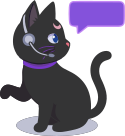

Jinx is the RLadies+ Slack assistant. It lets organisers run
/jinx commands without leaving Slack, answers questions
about the RLadies+ Guide when
you @-mention it, and routes new community Slack invite
requests to organisers for approval.
Install the app

Clicking the button opens the standard Slack OAuth flow. You pick a workspace, review the permissions, and approve. Approving stashes Jinx’s bot token for that workspace in Cloudflare KV; uninstalling it later (in Settings & administration → Manage apps) drops the token automatically.
Jinx only installs into the two RLadies+ workspaces — organisers and community. If you try to install it elsewhere, the OAuth callback refuses and nothing is written. The app configuration is open source in rladies/jinx if you want to fork your own copy.
What Jinx does
Slash commands
Type /jinx help in any channel to see the full command
list. Common ones:
-
/jinx invite @user to <team>— invite someone to the RLadies+ GitHub org and one of its teams. -
/jinx report weekly— generate an activity report for the org. -
/jinx slack-invite <email>— post a manual-invite checklist for an organiser to action (see Approving Slack invites below). -
/jinx blog-add <url>— auto-create a blog entry PR on the website from a URL.
The canonical reference, kept in sync with the package, is at inst/commands/help.md.
Ask Jinx anything about RLadies+
Mention @Jinx in any channel it’s a member of and ask a
question. Jinx searches the RLadies+ Guide and the RLadies+ website for relevant content,
then replies in-thread with sourced links.
@Jinx how do I start a new chapter?React with 👍 / 👎 / ❤️ on Jinx’s answers so we can track which replies are useful.
Approving Slack invites
Anyone can request to join the RLadies+ community Slack via the public Airtable form. When a request comes in, Jinx posts a Block Kit card to the organisers’ invite-approval channel with Approve / Deny buttons.
-
Deny marks the Airtable record
deniedand replaces the card with a denial note. Done. -
Approve replaces the card with a checklist
(workspace menu → Invite people to RLadies+ → paste email) and
a Mark invite sent button. The organiser still has to send the
actual Slack invite — Slack does not give community apps an API for
that. Once it’s sent, clicking Mark invite sent flips the
Airtable record’s
invitedflag and replaces the card with a final receipt.
The Airtable invited field means the invite was
actually sent, not just approved. Don’t flip it before the Mark
invite sent click.
Permissions and data
Jinx requests the following Slack scopes when you install it:
| Scope | Why |
|---|---|
commands |
Receive /jinx ... slash commands |
app_mentions:read |
Receive @Jinx ... mentions |
chat:write |
Post replies and approval cards |
chat:write.public |
Post to public channels Jinx hasn’t been added to |
Jinx does not read messages it isn’t directly mentioned in. It keeps no database of users or messages. Per-workspace bot tokens live in Cloudflare KV; everything else is ephemeral.
See PRIVACY.md for the full data-handling policy.
Troubleshooting
-
/jinx ...returns “Jinx only runs in the RLadies+ organisers and community workspaces”. The workspace you’re typing from isn’t on the allowlist. Check the team id with/team-idor ask your workspace admin, then contact the RLadies+ Global Team if you think it should be added. -
OAuth install completes but
/jinx helpstill says the same thing. The new team id needs to be added to the worker’sSLACK_ORGANIZER_TEAM_IDorSLACK_COMMUNITY_TEAM_IDvar and the worker redeployed. Open an issue at https://github.com/rladies/jinx/issues. -
Jinx doesn’t respond to
@-mentions in a private channel. Invite Jinx to the channel first (/invite @Jinx).
Source and feedback
- Code: https://github.com/rladies/jinx
- Issues and feature requests: https://github.com/rladies/jinx/issues
- Architecture notes (Worker + R package): see How Jinx is built.